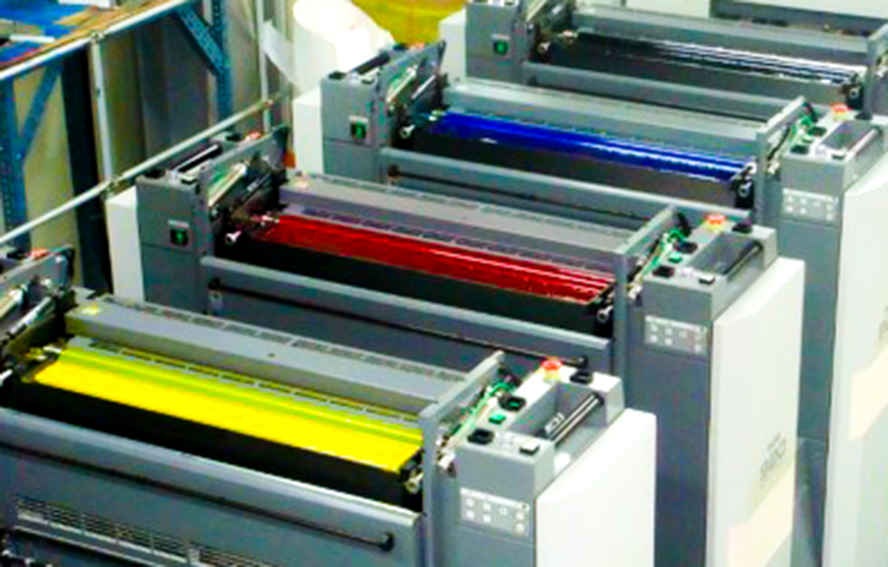
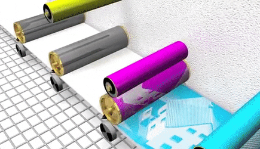

‘인쇄판’은 평판인쇄에서 본인쇄를 하기 위해 인쇄 기계에 거는 판을 말한다.
이미지는 원고에서 필름으로, 필름에서 인쇄판으로 옮겨가며 재현되고,
최종으로 인쇄판이 인쇄기에 걸려 인쇄된다.
CTP 방식은 데이터를 필름 출력의 중간
단계를 거치지 않고, 인쇄판에 직접 굽는 방식으로 출력과 소부, 즉 인쇄판 만드는 과정이 동시에 진행된다.
CTF 방식은 작업물을 평판스캐너로 4개의 원색을 분해한 후 먹(Black), 청(Cyan), 적(Magenta), 황(Yellow)으로 분판된 필름의 데이터를 인쇄판에 소부하여 인쇄하는 방식이다.
‘소부과정’은 인쇄판을 만드는 과정이다.
알루미늄판(PS판)에 감광액을 바른 후 UV램프로 자외선을 노출시킨다.
노출이 안된 부분은 판에 고착되고, 노출된 부분은 물에 세척이 되어
탈락시키는 원리이다. 빛 노출 후, 긁힘 방지를 위해 인쇄하기 직전 물로
닦이는 얇은 고무 코팅을 해준다.
소부가 된 인쇄판은 빛을 쪼이지 않는다면 하루 이상 보관 가능하고, 보관할
때도 빛을 쬐지 않도록 안 쪽으로 돌려 세워놓는다. 보통 인쇄기계가 돌아가는
하루의 양을 미리 소부하여 놓는다.
예전에는 여러 과정을 수작업으로 했지만, 요즘은 포지티브로 필름을 떠오면
미리 일정한 두께의 감광막을 처리하여 표준화된 *PS(Pre-sensitized Plate)판에
감광시켜 자동 현상기에 걸면 판이 바로 만들어진다. 아래에서 자세한 과정을 알아보자.
인쇄판을 만드는 데 걸리는 시간은
① 펀치기로 기계가 물리는 곳에 구멍을 뚫고 ② 감광기에서 노광하여
③ 자동현상기에 넣는 시간 약 5분 내외, 4도일 때 20분 정도 걸린다.
통수가 많아 1판으로 전량 인쇄가 어려울 때는 같은 판을 여러개 만들어 쓴다.

인쇄판은 인쇄기에 들어갈 수 있는 최대 크기대로 결정된다.
인쇄기의 종류에는
① 46전지 인쇄기, ② 대국전 인쇄기, ③ 국전인쇄기,
④ 4X6 2절 인쇄기, ⑤ 국 2절 인쇄기, ⑥ T 3절 인쇄기, ⑦ 베이비 인쇄기 등이 있다.
인쇄기계의 최대크기는 주로
③ 국전 636X939m, ② 대국전 705X1000mm, ① 46전지 788X1091mm 이다.
기계마다 종이를 물고 들어가는 폭이 다르기 때문에 정확한
물림폭을 알고 있어야 인쇄판을 만드는데 실수가 없다.
물림쪽에서 얼마나 떨어져 필름을 배치하여 감광해야 하는지
핀을 맞추기 위해 정확한 위치에 기계에 물리도록 구멍을 뚫어준다.
판이 마모되기까지 견디는 힘을 내쇄력이라고 한다.
일반적으로 사용하는 PS판은 보통 10만통의 내쇄력을 갖는다.
반복인쇄를 할 경우 표면의 감광액이 닳아 소부인쇄의 핵심인
망점 재현력이 떨어진다. 따라서 10만통이 넘는 경우에는 여러 벌의 판을 준비한다.
반복인쇄 뿐 아니라 종이의 종류도 내쇄력에 영향을 준다.
평활도가 낮은 표면이 거친 용지를 사용할 때는 10만통이 되기 전에 마모되기도 하고,
평활도가 높은 부드러운 용지를 사용할 때는 10만통이 약간 넘어도 사용 가능하다.
